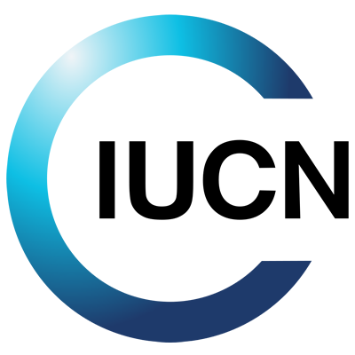

El desarrollo sustentable surge como una respuesta inmediata para trarar de resolver problemas ambientales que afectan al ser humano dentro de un mundo globalizado.
´
El concepto desarollo sustentable surje en el año de 1972 en la cumbre de la tierra conferencia de las naciones unidas que se llevo acabo en Estocolmo Suecia donde se hablo sobre el medio humano. Para el año de 1980 la IUCN (Union Internacional para la Concervacion de la Naturaleza) impulsó la conservación de los recursos naturales a través del mantenimiento de los ecosistemas, la preservación de la diversidad genética y la utilización sostenida de especies y ecosistemas.
En 1983 se establecio un documento llamado Nuestro Futuro Comun (Informe Brundtland) donde la ONU enfrenta y contrasta la postura de desarrollo económico actual junto con el de sustentabilidad ambiental, realizado por la ex-primera ministra noruega Gro Harlem Brundtland, con el propósito de analizar, criticar asi como replantear las políticas de desarrollo económico globalizador, reconociendo que el actual avance social se está llevando a cabo a un costo medioambiental alto. este documento se precente hasta el año de 1987.
Posteriormente en 1992 tra haber dado a conocer un poco mas claramente la problematica ambiental que se estaba dando a nivel mundial con el documento de Brundtland se comboco a otra cumbre de la tierra donde se expuso ya mas clara mente sobre el desarrolllo sustetable termino que habia sido mencionado anteriormente mas aun no se habia dado a conocer como un proyecto aplicable. Esta cumre trataba de establecer nuevos acuerdos donde los estados se comprometieran con proteger la integridad de el ambiente por medio de un desarrollo sustentable.
Lo anterior condujo a los Paises el buscar una manera de lograr este compromiso lo que nos lleva a el concepto Energia limpia se denomina energía renovable o limpia a la energía que se obtiene de fuentes naturales virtualmente inagotables, ya sea por la inmensa cantidad de energía que contienen, o porque son capaces de regenerarse por medios naturales estos tipos de energia son:
Medidas de accion para el desarrollo forestal sostenible